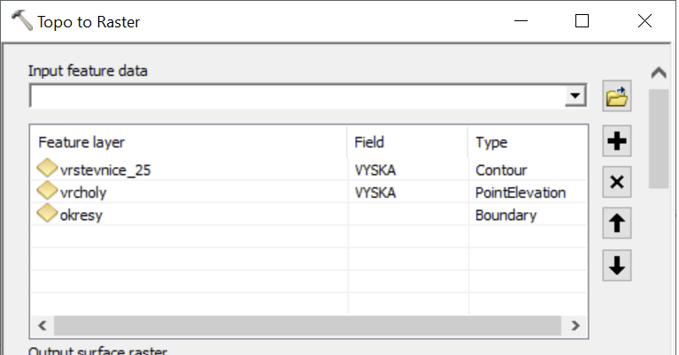

Lekce 18: Rastrové analýzy
Budeme řešit následující úlohu:
Jako vášnivý milovník vína toužíte po vlastní vinici. Nejprve je pro ni však třeba vybrat vhodné území, splňující následující kritéria: bude na svazích se sklonem menším než 20%, s jihovýchodní až jihozápadní orientací a zároveň skryta před zraky nenechavých turistů, kteří by ji mohli z okolních vyhlídek vidět a přijít na ochutnávku hroznů. Jakou rozlohu má vhodné území pro založení vinice?
(Samozřejmě pro reálnou analýzu bychom navíc uvažovali nadmořskou výšku (např. do 400 m n. m.) a půdní typ.)
K dispozici máme (data jsou ke stažení zde):
vrstevnice_25.shp: liniová vrstva vrstevnic s krokem 25 m.vrcholy.shp: bodová vrstva vrcholků kopců.okresy.shp: polygonová vrstva okresů ČR.
Úlohu budeme řešit nejprve pro celou ČR, následně řešení upravíme tak, aby proběhlo postupně pro jednotlivé okresy ČR.
Prvním krokem bude načtení modulů, nastavení prostředí a definování proměnných se vstupními parametry výpočtu:
import arcpy
# Nastavení prostředí
arcpy.env.workspace = r"in_memory"
arcpy.env.cellSize = 250
arcpy.env.overwriteOutput = True
arcpy.CheckOutExtension("Spatial")
# Vstupní vrstvy
in_vrst = r"C:\cesta\k\souboru\vrstevnice.shp"
in_vrch = r"C:\cesta\k\souboru\vrcholy.shp"
in_okre = r"C:\cesta\k\souboru\okresy.shp"
Příkaz arcpy.CheckOutExtension('Spatial') zajišťuje zpřístupnění licence extenze Spatial Analyst, kterou budeme pro výpočet potřebovat. Zapnutí extenze v ArcMap je součástí nastavení mapového dokumentu, proto při práci s Extenzemi pomocí Pythonu je třeba toto nastavení vždy explicitně udělat. Výraz CheckOut může být matoucí - opravdu se jím extenze zapíná, a nikoli vypíná. Naopak příkazem CheckInExtension se extenze vypíná.
Jelikož podmínky pro vinici zahrnují sklon, orientaci svahu a viditelnost, bude prvním krokem naší analýzy vytvoření digitálního modelu terénu. Protože informaci o terénu máme v podobě vrstevnic, nezbývá než použít nástroj TopoToRaster. Ten je z hlediska volání v Pythonu poněkud složitější (viz nápovědu!).
Jak víte, do nástroje TopoToRaster může vstupovat více různých vstupních vrstev, přičemž každá může být jiného typu. Základním vstupem je zpravidla vrstva vrstevnic (typ Contour), doplňkovými vstupy v našem případě budou vrstva vrcholů (typ Point Elevation) a vrstva okresů (typ Boundary). Odpovídá to následujícímu nastavení v okně nástroje:
